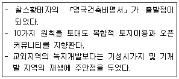
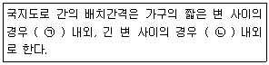
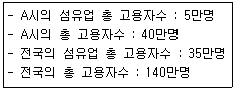
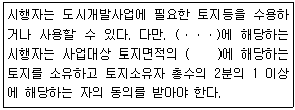

도시계획기사 (2019-09-21 기출문제)
1과목: 도시계획론
1. 공원 및 녹지에 관한 설명으로 옳은 것은?
- 수변공원은 3만m2 이상 규모에서 지정이 가능하다.
- 녹지의 종류는 완충녹지, 경관녹지, 시설녹지로 구분된다.
- 도시공원 및 녹지 등에 관한 법률에 의해 도시ㆍ군관리계획으로 결정된다.
- 녹지는 자연환경을 보전하거나 개선하고, 공해나 재해를 방지함으로써 도시경관의 향상을 도모하기 위한 것이다.
(정답률: 74%)

2. 도시ㆍ군관리계획의 주요 내용이 아닌 것은?
- 기반시설의 설치, 정비 또는 개량
- 지구단위계획구역의 지정 또는 변경
- 용도지역, 용도지구의 지정 또는 변경
- 관할구역에 대한 기본적인 공간구조와 장기발전방향 제시
(정답률: 69%)
3. 호이트의 선형이론에 대한 설명으로 옳지 않은 것은?
- 상류층의 거주지 입지 선택 능력에 의해 도시 내 거주지 유형이 결정된다.
- 도시의 발달은 교통축을 따라 도심에서 외곽으로 부채꼴 모양으로 분화되어 간다.
- 도심부에 고급 주택지가 형성되어 있고 외곽지로 갈수록 저소득층의 주택지가 형성된다.
- 버제스의 동심원 이론에 교통망의 중요성을 부각하고 도시성장 패턴의 방향성을 추가한 것으로 볼 수 있다.
(정답률: 73%)
4. 다음 설명에 해당하는 것은?

- 뉴어바니즘
- 도시 미화 운동
- 전통 이웃 개발
- 어반 빌리지 운동
(정답률: 69%)
5. 인구의 규모, 분포, 구조, 그리고 주택의 특성을 파악하기 위해 실시하는 우리나라 인구주택 총조사의 실시 주기는?
- 2년
- 5년
- 7년
- 10년
(정답률: 80%)
6. 도시조사 자료 중에서 2차 자료에 해당하지 않는 것은?
- 면접자료
- 통계자료
- 행정자료
- 도면자료
(정답률: 83%)
7. 쾌적한 주거환경을 확보하면서 과밀ㆍ과대도시의 폐해를 해결하기 위해 도시와 전원을 일체화하는 전원도시를 주장한 사람은?
- 마타
- 하워드
- 게데스
- 가르니에
(정답률: 89%)
8. 토지이용계획 실현수단을 크게 규제수단, 계획수단, 개발수단, 유도수단으로 나눌 때, 다음 중 직접적인 토지이용 ‘계획수단’에 해당하는 것은?
- 지구단위계획
- 세금 혜택
- 도시재개발사업
- 도시계획시설 정비
(정답률: 74%)
9. 도시계획의 실체적 이론과 절차적 이론에 대한 설명으로 옳지 않은 것은?
- 실체적 이론은 특정 계획 분야의 전문 지식에 관한 이론이다.
- 절차적 이론은 계획이 실행되는 환경이나 계획의 대상이 되는 현상을 이해하는데 사용되는 이론이다.
- 팔루디(Faludi)는 실체적 이론과 절차적 이론이 완전히 상호 베타적이지는 않다고 주장하였다.
- 도시계획에서 실체적 이론이란 토지이용계획, 교통계획 등 전문적 지식과 기술에 바탕을 둔 일련의 행위과정을 의미한다.
(정답률: 54%)
10. 환경적으로 건전하고 지속가능한 개발을 위해 환경보전과 개발을 조화시키려고 하는 추세에 따라 도시의 환경문제 해결에 적용하는 도시개념으로, 미국의 시바노, 독일의 카빌을 사례로 들 수 있는 것은?
- U-City
- Eco-City
- Smart City
- Compact City
(정답률: 85%)
11. 4단계 교통수요 추정법에 대한 설명으로 옳지 않은 것은?
- 교통수요 추정에서 전통적으로 가장 많이 사용되어온 방법이다.
- 계획가나 분석가의 주관이 개입될 여지가 전혀 없다는 특징이 있다.
- 분석결과에 대한 적절성을 검증하면서 순서적으로 추정해가는 장점이 있다.
- 총체적 자료에 의존하기 때문에 통행자의 행태적 측면은 거의 고려하지 않는다.
(정답률: 76%)
12. 광장의 종류와 설치 목적이 바르게 연결된 것은?
- 근린광장-교통이 혼잡한 주요시설에 대한 원활한 교통처리
- 역전광장-주민의 휴식ㆍ오락 공간 조성 및 경관ㆍ환경의 보전
- 중심대광장-다수인의 집회ㆍ행사ㆍ사교 등을 위해 필요한 경우 교통중심지에 설치
- 건축물부설광장-혼잡한 주요 도로의 교차지점에서 차량과 보행자의 원활한 소통 도모
(정답률: 85%)
13. 전체의 고용이 10,000명이고, 수입부문에 종사하는 고용자가 6,000명인 지역에서 1,000명을 고용하는 공장이 준공되었는데, 그 공장에서 생산된 제품 전부는 지역 외부로 수출한다면 전체적인 고용 증가는?
- 250명
- 500명
- 2,500명
- 5,000명
(정답률: 60%)
14. 교통존(Traffic Zone)의 설정 기준으로 옳지 않은 것은?
- 동질적인 토지 이용이 포함되도록 한다.
- 행정구역과 가급적 일치시킨다.
- 간선도로는 존 경계와 일치시킨다.
- 가능한 다양한 통행 특성을 가진 지역이 포함되도록 한다.
(정답률: 67%)
15. 국토기본법에 의한 지역계획의 범주에 속하는 것은?
- 광역권개발계획
- 수도권발전계획
- 개발촉진지구개발계획
- 특정용도지역개발계획
(정답률: 45%)
16. 파겐스(M. Fageence)가 제시한 직접적이고 영향이 큰 쇄신적 주민참여 기법에 해당하지 않는것은?
- 델파이 방법
- 샤레트 방법
- 명목 집단 방법
- 혼합형 탐색 방법
(정답률: 43%)
17. 국토의 계획 및 이용에 관한 법률상 용도지역 중 관리지역의 종류에 해당되지 않는 것은?
- 보전관리지역
- 생산관리지역
- 환경관리지역
- 계획관리지역
(정답률: 72%)
18. 도시화의 과정에서 도시산업의 발달 속도보다 도시인구의 증가 속도가 훨씬 크게 되는 현상은?(오류 신고가 접수된 문제입니다. 반드시 정답과 해설을 확인하시기 바랍니다.)
- 가도시화
- 간접도시화
- 종주도시화
- 과잉도시화
(정답률: 80%)
19. 도시의 구성 요소에 대한 설명으로 옳지 않은 것은?
- 게데스는 도시 활동을 생산과 소비로 구분하였다.
- 토지와 시설에 대한 물리적 계획의 3대 요소는 밀도, 동선, 배치라고 할 수 있다.
- 시민은 도시를 구성하는 가장 기본적인 요소인 동시에 도시가 존재하는 이유이기도 하다.
- 토지와 시설은 도시 공간상에서 물리적 상태로 존재하며 도시의 형태를 만들어 내도록 한다.
(정답률: 71%)
20. 국토계획의 개념에 대한 설명으로 옳지 않은 것은?
- 현안 문제들을 대상으로 단기적 대선 대안을 수립하는 계획이다.
- 국토의 공간구성과 관련되는 모든 분야가 망라되는 종합계획이다.
- 하위계획과 구체적인 집행 계획에 지침을 제시하는 지침 제시적 계획이다.
- 국토에서 일어나는 여러 가지 인간 활동의 공간적 배분 문제를 다루는 공간계획이다.
(정답률: 80%)
2과목: 도시설계 및 단지계획
21. 연립주택용지의 획지분할에 관한 내용으로 적합하지 않은 것은?
- 공동의 옥외 공간 확보가 용이하도록 분할한다.
- 소규모 획지는 개별주택의 남향배치가 용이하도록 남북축이 긴 장방형으로 한다.
- 연립주택의 유형과 평형을 고려하여 획지규모를 결정한다.
- 차량 및 보행동선, 판매시설 등을 종합적으로 고려하여 시설이용에 편리하도록 분할한다.
(정답률: 75%)
22. 지구단위계획수립지침에 따른 지구단위계획의 입안권자가 아닌 자는? (단, 계획의 입안을 위임할 경우는 고려하지 않는다.)
- 군수
- 시장
- 구청장
- 특별자치시장
(정답률: 70%)
23. 300세대 이상 500세대 미만의 주택단지를 건설하는 경우, 설치하지 않아도 되는 주민공동시설은?
- 경로당
- 어린이집
- 어린이놀이터
- 주민운동시설
(정답률: 59%)
24. 계획의 수립 주체에 따른 도시 계획에의 접근 방식 중, 주민과 국가 차원의 요구가 조화를 이룰 수는 있으나 이를 위해 주민들의 자치와 협동, 상당한 수준의 지도력이 요청되고 지역 사회 자체의 자원 동원 능력이 요구되는 것은?
- 절충식 계획
- 상향식 계획
- 중앙식 계획
- 하향식 계획
(정답률: 56%)
25. 지구단위계획수립지침상 경관상세계획을 수립하는 것을 원칙으로 하는 지역으로 옳지 않은 것은?
- 수림대ㆍ구릉지ㆍ하천변ㆍ청정호수 등 자연경관이 양호한 지역
- 고도지구 및 특정용도제한지구에 지정된 지구단위계획구역
- 전통적 건조물, 시대적 건축특성이 반영되어있는 건물군 등의 주변 지역
- 개발압력이 존재하고 있어 양호한 자연환경 및 경관의 보전이 필요한 지역
(정답률: 56%)
26. 지구단위계획수립지침에 따른 지구단위계획의 성격으로 옳지 않은 것은?
- 지구단위계획 수립의 주된 목적은 도시경관관리를 하기 위함이다.
- 지구단위계획구역 및 지구단위계획은 도시ㆍ군관리계획으로 결정한다.
- 지구단위계획은 인간과 자연이 공존하는 환경친화적 환경을 조성하고 지속가능한 개발 또는 관리가 가능하도록 하기 위한 계획이다.
- 지구단위계획은 난개발 방지를 위하여 개별 개발수요를 집단화하고 기반시설을 충분히 설치함으로써 개발이 예상되는 지역을 체계적으로 개발ㆍ관리하기 위한 계획이다.
(정답률: 61%)
27. 공동주택의 배치에서 도로 및 주차장의 경계선으로부터 공동주택의 외벽까지 이격하여야 하는 거리 기준은?
- 2m 이상
- 3m 이상
- 5m 이상
- 10m 이상
(정답률: 68%)
28. 공동주택단지의 lost space 중, 주민접근이 제한되거나 이용시설이 설치되지 않아 공간 이용에 어려움이 있는 유형은?
- 베타적 공간(anti space)
- 황량한 공간(prairie space)
- 소극적 공간(negative space)
- 애매한 공간(ambiguous space)
(정답률: 62%)
29. 중수도 순환방식 중 폐쇄순환방식에 해당하지 않는 것은?
- 개별순환방식
- 광역순환방식
- 복합순환방식
- 지구순환방식
(정답률: 48%)
30. 슈퍼블록(Super block)에 관한 설명으로 옳지 않은 것은?
- 충분한 공동의 오픈스페이스를 확보할 수 있다.
- 건물의 집약화와 도시기반시설의 공동화에 유리하다.
- 1960년대 이후 영국의 주택이론가들에 의해 창안되었다.
- 불필요한 도로의 면적을 줄이고 보도와 차도의 분리가 가능하다.
(정답률: 63%)
31. 지구단위계획의 특별계획구역에 대한 설명으로 옳지 않은 것은?
- 특별계획구역에 대한 계획내용은 지구단위계획에 포함하여 결정한다.
- 지구단위계획 입안 시, 현상설계 등에 의하여 창의적 개발안을 받아들일 필요가 있을 경우 특별계획구역으로 반영하여 함께 지정한다.
- 도시ㆍ군관리계획으로 결정하는데 있어 법령에서 지구단위계획으로 결정하도록 한 부분이 있는 경우에는 이들 모두를 도시ㆍ군관리계획으로 결정하여야 한다.
- 지구단위계획구역 중에서 계획의 수립 및 실현에 상당한 기간이 걸릴 것으로 예상되어 별도의 개발안이 필요한 경우에는 특별계획구역으로 지정할 수 없다.
(정답률: 67%)
32. 지구단위계획 수립 시 상업용지의 획지 및 가구계획 기준으로 틀린 것은?
- 도로에서의 접근이 용이하도록 계획한다.
- 구역 중심지의 주간선도로 또는 보조간선도로의 교차로 주변에 계획한다.
- 가구 규모는 시설입지에 대한 다양한 요구를 충족시킬 수 있도록 다양한 규모로 계획한다.
- 주간선도로 또는 보조간선도로를 따라 배치되는 가구는 2열 이상으로 배열이 되도록 한다.
(정답률: 72%)
33. 가로구역별 건축물의 높이를 지정ㆍ공고하고자 할 때 고려하여야 할 사항이 아닌 것은?
- 도시미관 및 경관계획
- 해당 가로구역의 주차 능력
- 해당 가로구역이 접하는 도로의 너비
- 해당 가로구역의 상ㆍ하수도 등 간선시설의 수용능력
(정답률: 60%)
34. 프리드만(A.Z. Friedmann)이 제시한 옥외공간을 대상으로 한 설계 평가 시 평가해야 할 사항이 아닌 것은?
- 이용자
- 설계자
- 주변 환경
- 물리적 및 사회적 환경
(정답률: 81%)
35. 주요 조망점으로 활용하는 동시에 조망대상으로도 계획할수 있고 진입부로부터 공간 및 시각적 연계성을 통해 단지의 중심적 역할을 담당하는 것은?
- 경관축
- 경관거점
- 경관권역
- 경관지점
(정답률: 60%)
36. 지구단위계획수립지침에 따른 환경관리계획에 관한 내용으로 틀린 것은?
- 차도와 주거지 사이에 방음벽을 설치하는 경우에는 소음원에서 멀리 설치하고, 소음원과 건물 사이에 가급적 둔덕을 설치하지 않도록 한다.
- 개발행위로 인하여 환경에 큰 영향이 가해질 수 있는 생태민감지역을 보존하여 시(군)내의 오픈스페이스 체계에 연결시킨다.
- 지역에 산재한 저수지ㆍ호수ㆍ마을연못 등의 자원을 조사하여 마을 내 수자원의 보전과 전체적인 수자원의 순환체계를 고려한 수자원계획을 수립한다.
- 강우 시 유출수에 의한 환경오염을 저감하기 위하여 투수성 포장 등 비점원오염(non-point source pollution)물질을 줄일 수 있는 방안을 고려하여야 한다.
(정답률: 75%)
37. 다음 ()안에 들어갈 내용으로 옳은 것은?

- ㉠:60m 내지 100m, ㉡:20m 내지 50m
- ㉠:80m 내지 120m, ㉡:30m 내지 50m
- ㉠:90m 내지 150m, ㉡:25m 내지 60m
- ㉠:100m 내지 200m, ㉡:50m 내지 80m
(정답률: 61%)
38. 일률적으로 규제되는 전통적 지역지구제의 단점을 보완하거나 구체적 환경목표를 적극적으로 실현하는 특수적 규제수법과 가장 거리가 먼 것은?
- 특별허가(special permit)
- 적용특례(zoning variance)
- 유도지역제(incentive zoning)
- 중복지역지구제(overlay zoning)
(정답률: 47%)
39. 인간이 최소한의 폐쇄감을 느끼는 거리(W)와 수직면 높이(H)의 관계는?
- W/H=1(45°)
- W/H=2(27°)
- W/H=3(18°)
- W/H=4(14°)
(정답률: 54%)
40. 도시ㆍ군계획시설의 결정ㆍ구조 및 설치기준에 관한 규칙에 의한 보행자전용도로의 최소 폭은?
- 1.0m
- 1.5m
- 2.0m
- 2.5m
(정답률: 73%)
3과목: 도시개발론
41. 다음은 사업성분석의 단계를 나타내고 있는데, 이 중 분석과정을 가장 알맞게 나타내고 있는 것은? (단, 1단계부터 4단계까지로 나타냄)
- 할인율 설정→연차별투자비용 추정→연차별 분양수입추정→현금 흐름표 작성
- 직접비 및 간접비 추정→분양계획→용지별 분양가격 추정→사업성 평가
- 할인율 설정→현금 흐름표 작성→연차별 투자비용 추정→연차별 분양수입추정
- 분양계획→현금 흐름표 작성→용지별 분양가격 추정→직접비 및 간접비 추정
(정답률: 56%)
42. 환지계획에서 사업에 필요한 경비를 조달하고 공공시설 설치에 필요한 용지를 확보하기 위해 정하는 것은?
- 체비지ㆍ보류지
- 청산환지
- 입체환지
- 증환지
(정답률: 76%)
43. 일반적인 부동산개발금융 방식의 구분 중 부채에 의한 조달 방식으로 대출자가 부동산 개발에 의해 발생하는 수익의 배분에 일부 참여하는 방식은?
- sale & lease back
- participation loan
- interest only loans
- 자산매입 조건부대출
(정답률: 71%)
44. 도시개발 사업지구 A의 장래 인구는 초기에 완만하게 성장하다가 일정기간이 지나면 급속하게 증가하고, 다시 일정기간이 지나면 증가율이 점차 감소하여 일정수준을 유지할 것으로 보인다. A 사업지구의 장래 인구 추정방법으로 가장 알맞은 것은?
- 지수모형
- 로지스틱모형
- 선형모형
- 수정지수모형
(정답률: 63%)
45. 마케팅의 개념에서 D.Schultz가 공급자 관점의 4P전략을 수요자 입장의 4C 전략으로 전환한 내용의 연결이 옳은 것은?
- 상품(product)→소비자(customer value)
- 상품(product)→비용(cost to the customer)
- 홍보(promotion)→편리성(convenience)
- 장소(place)→의사소통(communication)
(정답률: 64%)
46. 공동주택을 대상으로 하는 리모델링 사업의 근거법은 무엇인가?
- 도시공원 및 녹지 등에 관한 법률
- 주택법
- 국토의 계획 및 이용에 관한 법률
- 임대주택법
(정답률: 79%)
47. 다음 중 경제성분석에서 사회적 편익과 비용의 측정에 사용되는 기본원칙으로 옳지 않은 것은?
- 세금, 이자비용 등 이전비용 등은 사회적 순현재가치에 포함한다.
- 사회적 편익과 비용은 가능하면 경쟁가격으로 측정되어야 하나 경쟁가격이 없을 경우 잠재가격으로 측정한다.
- 사회적 순현재가치는 사회적 편익과 사회적 비용을 사회적 할인율로 할인하여 계산한다.
- 경제성 분석은 일반적으로 비용편익 분석을 통해 이루어진다.
(정답률: 50%)
48. 우리나라 도시개발 제도의 역사에서 서울시의 경우 강북과 강남의 상대적 격차를 줄이고 강북의 쇠퇴한 주거지 정비를 통해 강북 시민의 삶의 질 향상과 도시기반시설 정비를 통해 서울시 내부의 균형발전 차원에서 추진된 사업은 무엇인가?
- 뉴타운사업
- 도시재생사업
- 혁신도시사업
- 스마트도시사업
(정답률: 66%)
49. 경제성분석에서 가치화 불능효과에 대한 설명으로 옳은 것은?
- 가치화 불능효과는 조건부 가치측정법을 이용하여도 금전적인 가치로 나타낼 수 없다.
- 가치화 불능효과는 구체적인 수치로 나타낼 수는 있으나 효과의 가치를 화폐단위로 나타낼 수 없는 효과다.
- 가치화 불능효과와 시장재 효과를 명확하게 구분하는 기준이 존재하여 경제성 분석에 유용하다.
- 가치화 불능효과의 예로는 재화, 서비스 시장의 변화를 들 수 있다.
(정답률: 55%)
50. 도시개발의 정의를 설명한 내용 중 광의의 개념으로 가장 적절한 것은?
- 건축에 의한 개량 행위들
- 도시 확산을 위한 신개발, 재개발과 같은 도시공간개발
- 도시변화의 수요에 대응하여 도시발전을 도모하기 위한 우연한 행위
- 도시성장을 관리하고 도시발전을 도모하기 위한 경제, 사회 등 모든 개발행위의 총체
(정답률: 70%)
51. 압축도시(Compact City)에 대한 설명으로 틀린 것은?
- 압축도시의 개념은 직주근접과 관련이 있다.
- 교외지역 주거지를 저밀도로 확산시키는 개발 방식이다.
- 지속가능한 개발이 가능하도록 등장한 도시개발 패러다임 중 하나이다.
- 환경부하를 최소화하고 정주지 개발의 효율성을 높이려는 목적을 갖는다.
(정답률: 76%)
52. 다음 중 부동산개발금융의 지분조달방식에 관한 설명으로 옳지 않은 것은?
- 지분에 의한 조달은 일반적으로 신디케이션, 합작회사, 파트너십 형태로 이루어진다.
- 지분조달방법은 원리금이나 이자의 상환 부담이 없는 것이 장점이다.
- 지분조달방법에서 레버리지 효과(Leverage Effect)가 나타난다.
- 조합원의 공적인 모집인 경우 다양한 규제에 의해 지분투자자의 이익이 보호된다.
(정답률: 46%)
53. 현재 인구가 50만명이고 연평균 인구증가율이 2.5%인 도시의 경우, 등비급수법에 의해 추정한 20년 후의 인구는 약 얼마인가?
- 70만명
- 77만명
- 82만명
- 90만명
(정답률: 52%)
54. 단일 프로젝트의 사업성을 평가하기 위한 시간대별 비용과 수입이 추정되었을 때 평가 지표와 거리가 가장 먼 것은?
- 수익성지수(Profitability index)
- 순현재가치(Financial Net present value)
- 내부수익률(Financial Internal rate of return)
- 다지역투입산출(Multi-region input-output)
(정답률: 74%)
55. 도시개발사업의 방식 중 “수용 또는 사용방식”이 환지방식이나 혼용방식과 비교하여 갖는 특징으로 옳지 않은 것은?
- 초기투자비가 막대한 편이다.
- 사업기간이 상대적으로 많이 걸린다.
- 이주대책을 마련하는 데에 어려움이 따를 수 있다.
- 전면매수에 따른 토지주의 반발이 많아질 수 있다.
(정답률: 63%)
56. 바다, 하천, 호수 등의 공간을 가지는 육지에 인공적으로 개발된 공간을 무엇이라 하는가?
- 역세권
- 지하공간
- 텔레포트
- 워터프론트
(정답률: 81%)
57. 용도지역제(zoning)와 획지분할규제(subdivision control)를 근간으로 하는 미국의 종래 택지개발방식이 지니는 문제점을 타개하기 위한 제도로서 일단의 지구를 하나의 계획단위로 보아 그 지구의 특성에 맞는 설계기준을 개발자와 그 개발을 관장하는 당국 간의 협상과정을 통해 융통성 있게 능률적으로 책정ㆍ허용함으로써 공적 입장에서 요구되는 환경의 질과 개발자의 입장에서 요구되는 사업성을 동시에 추구해 가는 제도는?
- 개발신용제(DCR)
- 대중교통중심개발(TOD)
- 계획단위개발(PUD)
- 근린주구제(NUD)
(정답률: 80%)
58. 도시마케팅에 대한 설명으로 가장 거리가 먼 것은?
- 도시마케팅의 시장은 공공서비스를 생산하고 공급하는 도시정부와 그것을 소비하는 단위들이 커뮤니케이션 하는 도시공간이다.
- 도시정부 혹은 시도 내의 공ㆍ사적 주체가 목표 시장에 대해 경쟁 도시보다 효율적으로 상품을 제공하고 만족을 극대화하기 위해 효율적으로 관리하는 것이다.
- 도시나 도시 내 특정 장소를 상품화하는 것으로, 일반 재화나 용역과는 다른 특징을 갖는다.
- 재화나 서비스를 다른 지역에서 수입하여 부가가치를 창출하는 것을 주요 목적으로 한다.
(정답률: 70%)
59. 「도시개발법령」에서 규정하는 도시개발사업의 시행 방식에 해당되는 것은?
- 순환정비방식
- 현지개량방식
- 관리처분방식
- 환지방식
(정답률: 67%)
60. 다음 중 주택재개발사업의 사업시행방식이 아닌 것은?
- 차관재개발
- 위탁재개발
- 수복재개발
- 순환재개발
(정답률: 41%)
4과목: 국토 및 지역계획
61. 도로망 구성형태 중 방사형 도로망의 특징으로 옳은 것은?
- 대각선을 삽입하여 격자형의 단점을 보완한 형태이다.
- 도심의 기념비적인 건물을 중심으로 주변과 연결된다.
- 고대 및 증세 봉건도시에서 볼 수 있는 전형적인 형태이다.
- 지형이 평탄한 도시에 적합하고 부정형한 토지가 적다.
(정답률: 68%)
62. 다음 지역개발전략 중 성격이 다른 하나는?
- 내생적 개발전략
- 불균형 개발전략
- 하향식 개발전략
- 성장거점 개발전략
(정답률: 54%)
63. 1970년대 신 인간주의(New Humanism)에 기초하여 발전된 교류적 계획(transactive planning)과 관련이 없는 것은?
- 프리드만(John Friedmann)
- 계획가와 피계획가 간의 대화 중시
- 인간의 존엄성 강조
- 총체주의(Synopticism)
(정답률: 69%)
64. 다음 중 특별시, 광역시, 시ㆍ도 수준의 지방정부차원에서 수립하는 지역계획에 해당하지 않는 것은?
- 광역도시계획
- 도시ㆍ군기본계획
- 수도권정비계획
- 도시ㆍ군관리계획
(정답률: 54%)
65. 문제지역(Problem Area)의 유형 중 낙후지역(Backward Regions)의 특징에 해당되지 않는 것은?
- 높은 실업률
- 단기적 경기침체
- 지속적인 인구 감소
- 낮은 소득수준 및 생활수준
(정답률: 77%)
66. 국토 및 지역계획과 관련한 사회 여건의 변화 중, 후기 포디즘과 비교하여 포디즘이 갖는 특징으로 틀린 것은?
- 포디즘 사회에서는 대규모 도시, 대규모 공장, 대규모 노동력 등을 통해 규모의 경제 및 집적의 경제를 추구한다.
- 포디즘하의 국가는 사회복지에 대한 재정지원을 강화하고 공공서비스에 대한 예산지원을 확대하고 있다.
- 포디즘 사회에서는 공공 임대주택사업이나 노숙자 관리 등을 비영리 기관, 제3섹터, 민간기구 등에서 담당한다.
- 포디즘 사회에서는 국가 경제의 성장에 역점을 두고 국가가 주도적으로 경제 발전을 추진해 나간다.
(정답률: 61%)
67. 지역 간 소득격차 분석에 사용되는 지표로 거리가 먼 것은?
- 지니계수
- 로렌츠 곡선
- 데이비드의 종주화지수
- 윌리암슨의 가중변이계수
(정답률: 51%)
68. 제조업이나 상업활동에 관련된 쇄신이 도시계층을 따라 전파되는 과정을 가장 체계적으로 종합한 사람은?
- Berry
- Hudson
- Pederson
- Beckman
(정답률: 56%)
69. 국토기본법에 의한 국토조사 중 정기조사를 실시하는 기간 기준은?
- 매년
- 2년 단위
- 3년 단위
- 5년 단위
(정답률: 57%)
70. 케빈 린치가 제시한 도시경관이미지의 구성요소가 아닌 것은?
- 선(linear)
- 결절점(node)
- 지구(district)
- 지표물(landmark)
(정답률: 71%)
71. 제2차 국토종합개발계획(1982~1991)의 특수지역 개발 대상에 해당되지 않는 것은?
- 광산도읍(鑛山都邑)
- 휴전선 인접지역
- 낙도지역(落島地域)
- 산악지역(山岳地域)
(정답률: 49%)
72. 튀넨의 농업입지론에서 재배작물의 유형을 결정하는 요소에 해당하지 않는 것은?
- 지대
- 생산비
- 운송비
- 경작지 규모
(정답률: 66%)
73. 우리나라 수도권을 질서 있게 정비하고 균형있게 발전시키며 지역균형발전을 위해 시도되었던 정책으로 적합하지 않은 것은?
- 건축허가총량 지역안배
- 공장총량규제
- 공공기관의 분산 및 이전
- 대학정원 규제
(정답률: 47%)
74. 다음의 조건을 가진 A시의 섬유업에 관한 LQ지수는?

- 0.5
- 1.2
- 2.0
- 2.4
(정답률: 58%)
75. North의 경제기반이론(economic base theory)에 따라 다음 중 다른 셋과 구별되는 부문은?
- 수출부문(export sector)
- 비기반부문(non-basic sector)
- 지방부문(local sector)
- 서비스부문(service sector)
(정답률: 44%)
76. 성장거점모형에서 경제공간의 지리적 공간으로의 변환을 최초로 설명한 학자는?
- 페로우(Perroux, F.)
- 부드빌(Boudeville, J.)
- 미르달(Myrdal, G.)
- 허쉬만(Hirschman, A)
(정답률: 42%)
77. 우리나라 국토 및 지역계획의 특징으로 가장 거리가 먼 것은?
- 다목적 계획
- 비물리적 계획
- 하향적 계획
- 지표적 계획
(정답률: 64%)
78. 어떤 국가의 도시규모가 지프(Zipf)의 순위-규모법칙에 의한 순위규모분포(q=1)를 따른다고 할 때, 수위 도시의 인구가 100만명이라면 제 4순위 도시의 인구는 얼마로 예상할 수 있는가?
- 20만명
- 25만명
- 33만명
- 40만명
(정답률: 71%)
79. 하겟(Hagget)이 제시한 도시공간조직의 구성요소에 해당하지 않는 것은?
- 경향면(surface)
- 네트워크(network)
- 결절(node)
- 기후(climate)
(정답률: 57%)
80. 크리스탈러가 중심지 이론에서 제시한 공간 조직 원리에 해당하지 않는 것은?
- 교통원리
- 시장원리
- 입지원리
- 행정원리
(정답률: 69%)
5과목: 도시계획관계법규
81. 도시공원의 설치 규모 기준이 틀린 것은? (문제 오류로 가답안 발표시 2번으로 발표되었지만 확정답안 발표시 2, 3번이 정답처리 되었습니다. 여기서는 가답안인 2번을 누르면 정답 처리 됩니다.)
- 어린이공원:1500m2 이상
- 묘지공원:30000m2 이상
- 도시농업공원:100000m2 이상
- 근린생활권 근린공원:10000m2 이상
(정답률: 73%)
82. 공원녹지법상 녹지의 기능별 세분 내용이 모두 옳은 것은?
- 완충녹지와 경관녹지
- 시설녹지와 경관녹지
- 완충녹지와 휴양녹지
- 자연녹지와 생산녹지
(정답률: 74%)
83. 도시ㆍ군관리시설 부지의 매수청구에 관한 내용으로 틀린 것은?
- 매수의무자가 지방자치단체이고 토지소유자가 원하는 경우 도시ㆍ군계획시설채권을 발행하여 매수 대금을 지급할 수 있다.
- 도시ㆍ군계획시설채권의 상환기간은 15년 이내로 한다.
- 매수 의무자는 매수 청구를 받은 날부터 6개월 이내에 매수 여부를 결정하여야 한다.
- 도시ㆍ군계획시설채권의 이율은 1년 만기 정기예금금리의 평균 이상이어야 하며, 구체적인 상환기간과 이율은 지방자치단체의 조례로 정할 수 있다.
(정답률: 55%)
84. 다음 중 건폐율에 관한 내용이 틀린 것은?
- 건페율이란 대지면적에 대한 건축면적의 비율이다.
- 도시지역 내 주거지역의 건폐율 최대한도는 70% 이하이다.
- 관리지역 내 보전관리지역의 건폐율 최대한도는 10% 이하이다.
- 농림지역의 건폐율 최대한도는 20% 이하이다.
(정답률: 56%)
85. 주택법령상 ‘준주택’의 범위와 종류에 해당하지 않는 것은?
- 건축법 시행령의 관련 규정에 따른 기숙사
- 건축법 시행령과 노인복지법의 관련 규정에 따른 노인복지주택
- 건축법 시행령의 관련 규정에 따른 오피스텔
- 건축법 시행령의 관련 규정에 따른 단독주택
(정답률: 67%)
86. 수도권정비계획법상의 총량규제에 관한 내용이 틀린 것은?
- 국토교통부장관은 인구집중유발시설이 수도권에 과도하게 집중되지 아니하도록 하기 위하여 신설ㆍ증설의 총 허용량을 정할 수 있다.
- 국토교통부장관은 인구집중유발시설이 수도권에 과도하게 집중되지 아니하도록 하기 위하여 기준을 초과하는 신설ㆍ증설을 제한할 수 있다.
- 공장에 대한 총량규제의 내용과 방법은 수도권정비위원회의 심의를 거쳐 결정하며, 관할 시ㆍ도지사는 이를 고시하여야 한다.
- 관계 행정기관의 장은 인구집중유발시설의 신설ㆍ증설에 대하여 규정에 의한 총량규제의 내용과 다르게 허가 등을 하여서는 아니 된다.
(정답률: 55%)
87. 관광진흥법령상 관광사업의 종류와 그 세분에 해당하는 내용의 연결이 틀린 것은?
- 여행업:일반여행업, 국외여행업, 국내여행업
- 야영장업:일반야영장업, 산림야영장업
- 관광유람선업:일반관광유람선업, 크루즈업
- 호텔업:가족호텔업, 호스텔업, 소형호텔업
(정답률: 50%)
88. 다음 중 관할 구역에 대한 도시ㆍ군기본계획의 수립권자에 해당하지 않는 자는?
- , 국토교통부장관
- 광역시장
- 시장 또는 군수
- 특별시장
(정답률: 63%)
89. 도시개발법상 토지등의 수용 또는 사용에 관하여 ()안에 들어갈 내용으로 옳은 것은?

- 2분의 1이상
- 3분의 1이상
- 3분의 2이상
- 4분의 3이상
(정답률: 74%)
90. 도시ㆍ군기본계획에 대한 타당성 여부는 몇 년마다 전반적으로 재검토하여 정비하여야 하는가?
- 3년
- 5년
- 10년
- 20년
(정답률: 65%)
91. 도시ㆍ군계획시설 중 유원지에 설치하는 아래 시설들이 해당되는 것은?
- 유희시설
- 휴양시설
- 위락시설
- 특수시설
(정답률: 43%)
92. 도시개발사업의 전부 또는 일부를 환지방식으로 시행하려는 경우 환지 계획에 작성하여야 할 사항이 아닌 것은?
- 환지설계
- 필지별 된 환지 명세
- 청산금 지급 예정일
- 체비지 또는 보류지의 명세
(정답률: 65%)
93. 도시ㆍ군계획시설의 결정ㆍ구조 및 설치 기준에 관한 규칙상 용도지역별 도로율 기준이 옳은 것은? (단, 간선도로의 경우는 고려하지 않는다.)
- 주거지역:20%이상 30%미만
- 상업지역:25%이상 35%미만
- 공업지역:10%이상 20%미만
- 녹지지역:5%이상 15%미만
(정답률: 47%)
94. 도시재정비 촉진을 위한 특별법에 따른 재정비 촉진지구의 유형 구분에 해당하지 않는 것은?
- 주거지형
- 중심지형
- 고밀복합형
- 저밀복합형
(정답률: 60%)
95. 건축법령상 용도별 건축물의 연결이 틀린 것은?
- 단독주택:다중주택
- 공동주택:다가구주택
- 제1종 근린생활시설:의원
- 의료시설:병원
(정답률: 57%)
96. 과밀부담금에 관한 설명으로 옳은 것은?
- 과밀부담금은 건축비의 100분의 20으로 하는 것을 원칙으로 한다.
- 건축물 중 주차장의 용도로 사용되는 건축물은 부담금을 감면할 수 없다.
- 과밀부담금은 부과 대상 건축물이 속한 지역을 관할하는 시ㆍ도지사가 부과ㆍ징수한다.
- 과밀부담금에 반영되는 건축비는 기획재정부장관이 고시하는 표준건축비를 기준으로 산정한다.
(정답률: 46%)
97. 시ㆍ도 도시계획위원회의 구성 기준으로 옳은 것은? (단, 공동으로 도시계획위원회를 설치하는 경우는 고려하지 않는다.0
- 위원장 및 부위원장 각 1명을 포함한 15명 이상 25명 이하의 위원으로 구성한다.
- 위원장 및 부위원장 각 1명을 포함한 25명 이상 30명 이하의 위원으로 구성한다.
- 위원장 1명과 부위원장 2명을 포함한 20명 이상 25명 이하의 위원으로 구성한다.
- 위원장 1명과 부위원장 2명을 포함한 25명 이상 30명 이하의 위원으로 구성한다.
(정답률: 54%)
98. 주택법에 따른 용어의 정의가 틀린 것은?
- 공동주택이란 건축물의 벽ㆍ복도ㆍ계단이나 그 밖의 설비 등의 전부 또는 일부를 공동으로 사용하는 각 세대가 하나의 건축물 안에서 각각 독립된 주거생활을 할 수 있는 구조로 된 주택을 말한다.
- 민영주택이란 국민주택을 제외한 주택을 말한다.
- 도시형 생활주택이란 150세대 미만의 국민주택규모에 해당하는 주택을 말한다.
- 에너지절약형 친환경주택이란 저에너지 건물조성기술 등 대통령령으로 정하는 기술을 이용하여 에너지 사용량을 절감하거나 이산화탄소 배출량을 저감할 수 있도록 건설된 주택을 말한다.
(정답률: 67%)
99. 다음 중 도시 및 주거환경정비법에 따른 정비기반시설에 해당하지 않는 것은? (단, 주거환경개선사업을 위하여 지정ㆍ고시된 정비구역에 설치하는 공동이용시설로 시장ㆍ군수 등이 관리하는 것으로 포함된 시설은 제외한다.)
- 상하수도
- 공공공지
- 비상대피시설
- 도서관
(정답률: 63%)
100. 다음 중 수도권정비위원회의 위원장은?
- 국무총리
- 기획재정부장관
- 국토교통부장관
- 서울특별시장
(정답률: 52%)